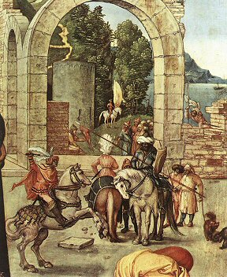

|
ANBETUNG DER KÖNIGE (1504)
Öl auf Holz, 99 x 114 cm
Uffizien-Museum, Florenz (Italien)
∆
Kommentar
Dieses religiöse
Werk zeigt die Heiligen Drei Könige neben Maria und dem
Jesuskind. Das Gemälde wurde von Friedrich III, der Weise, Kurfürst von
Sachsen, für die Kirche des Wittenberger Schlosses in Auftrag gegeben. Aufgrund der
formalen, farbigen Anordnung seiner Darstellung wurde dieses Gemälde
als „die
erste klassische Komposition der deutschen Malerei” betrachtet.
∆
Detaillierte Analyse
Dürer hat den Raum mithilfe
einer Gewölbearchitektur und einer besonders raffinierten Perspektive untergliedert. Die Heiligen Drei Könige befinden sich leicht überhöht auf einer Terasse, auf die zwei Stufen hinaufführen, und füllen diesen Bereich. Rechts von den Königen ist ein Mann mit einem Turban zu sehen. Die Tasche, die er träg, scheint schwer zu sein und enthält wahrscheinlich wertvolle Geschenke für das Jesus-Kind. Die Jungfrau Maria trägt himmelblaue Kleidung und einen ebenfalls himmelblauen Umhang sowie einen weißen Schleier. Sie erscheint nicht in der bis dahin üblichen Position, frontal und in der Mitte des Bildes, sondern vielmehr nach links verschoben und im Profil. Jesus ist ein verspieltes Kind, das sich nach vorne streckt, um nach der mit Gold gefüllten Schatulle zu greifen, die ihm von dem knienden Kaspar vorsichtig dargereicht wird. Die in den Vordergrund gerückte Szene beschränkt sich auf diese Handlung, mit Ausnahme des orientalischen Dieners, der mit seiner Hand in die Tasche greift. Alle anderen Personen sind reglos. In Gedanken versunken schauen sie nach vorn oder zur Seite.
Durch die Ruinen entsteht der Eindruck von Tiefe. Die Formen und Farben der Ruinen sowie diejenigen der Reiter im Hintergrund und der sie umgebenden fernen Landschaft schaffen ein wunderbares Gleichgewicht zu der Szene von Christi Geburt. In Zeichnungen und Kupferstichen hatte Dürer mit dieser Konzeption bereits experimentiert. Der Hintergrund verdient eine besondere Beachtung: an einem klaren Himmel türmen sich Schönwetterwolken, die Stadt erstreckt sich bis an die Spitze des Berges, hinter den Heiligen Drei Königen eine Reitergruppe unter einem Bogen, in der Ferne ein See und ein Boot…
Die Heiligen Drei Könige tragen prächtige phantasievoll gemalte Kleidung und kostbare Schmuckstücke sowie sorgfältig gearbeitete Schalen und Schatullen, in denen ihre Gaben enthalten sind. Daran lässt sich erkennen, dass Dürer auch die Goldschmiedekunst beherrschte. Die Physiognomie des jungen Königs Melchior mit seinen langen blond gelockten Haaren in der Mitte des Gemäldes erinnert stark an eines der Selbstbildnisse des Malers.
Im Hintergrund hat Dürer einen Hirsch eingefügt, wie er ihn bereits in seinen Aquarellen gezeichnet hat, und der hier Christus symbolisiert. Der als Heilpflanze beliebte Breitwegerich erinnert an das Blut Christi. Auf dem Mühlstein vorne links im Bild sitzt ein von Schmetterlingen umgebener Käfer. Er steht für die menschliche Seele und kann hier als Symbol für die Wiederauferstehung gedeutet werden.
Dieses Gemälde zählt zu den Werken Dürers, die sich durch eine besondere Detailvielfalt und Kunstfertigkeit auszeichnen.

Detail der Reiter rechts im Bild
∆
Links
Website des Uffizien-Museums in Florenz:
http://www.arca.net/uffizi/index.htm
∆
|